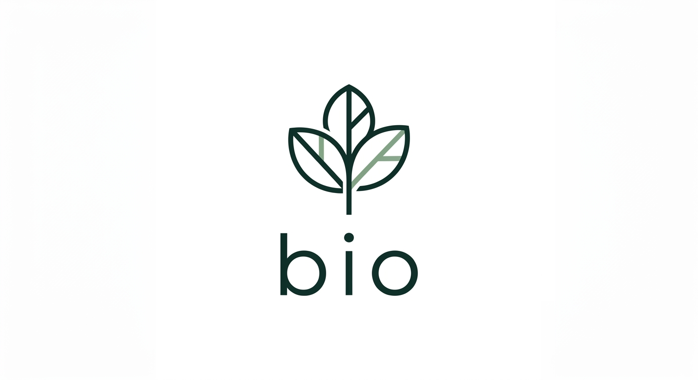
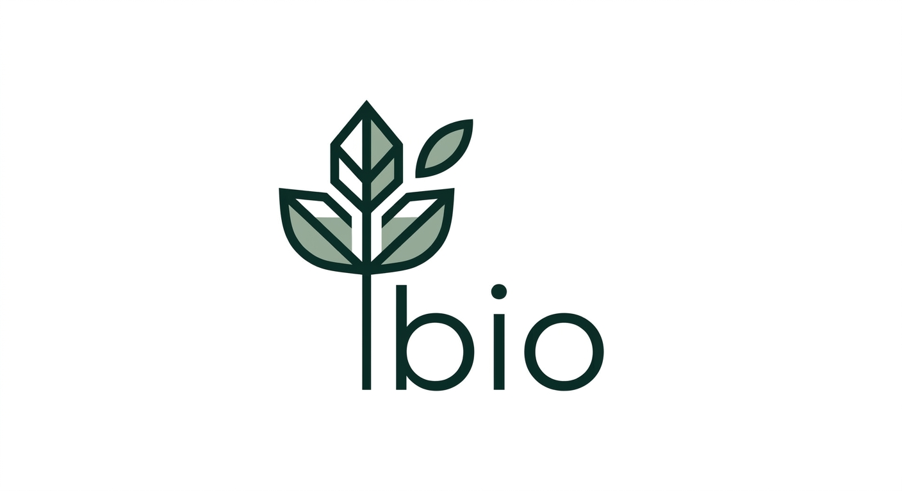

I've generated 4 minimalist directions for the 'bio' brand. Which one do you prefer?

Geometric icon with balanced typography.

Clean abstract shape, professional and stable.
Integrated leaf icon with lowercase 'bio'.
Minimalist botanical accent, boutique feel.